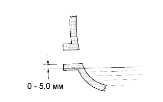

СИСТЕМА МЕХАНИЧЕСКОЙ ТРАНСМИССИИ > ПРОВЕРКА БЕЗ СНЯТИЯ С АВТОМОБИЛЯ |
| 1. ПРОВЕРЬТЕ ТРАНСМИССИОННОЕ МАСЛО |
|  |
Установите автомобиль на ровной поверхности.
Снимите пробку наливной горловины и прокладку.
Убедитесь в том, что уровень масла отстоит от нижнего края отверстия для заливной пробки на 0-5 мм (0-0,20 дюйма).
Если результат не соответствует требованиям, добавьте трансмиссионную жидкость.
Если уровень масла мал, проверьте, нет ли утечек. При обнаружении утечки отремонтируйте неисправный участок, чтобы устранить утечку. При необходимости замените поврежденные детали.
Установите новую прокладку и пробку наливного отверстия.